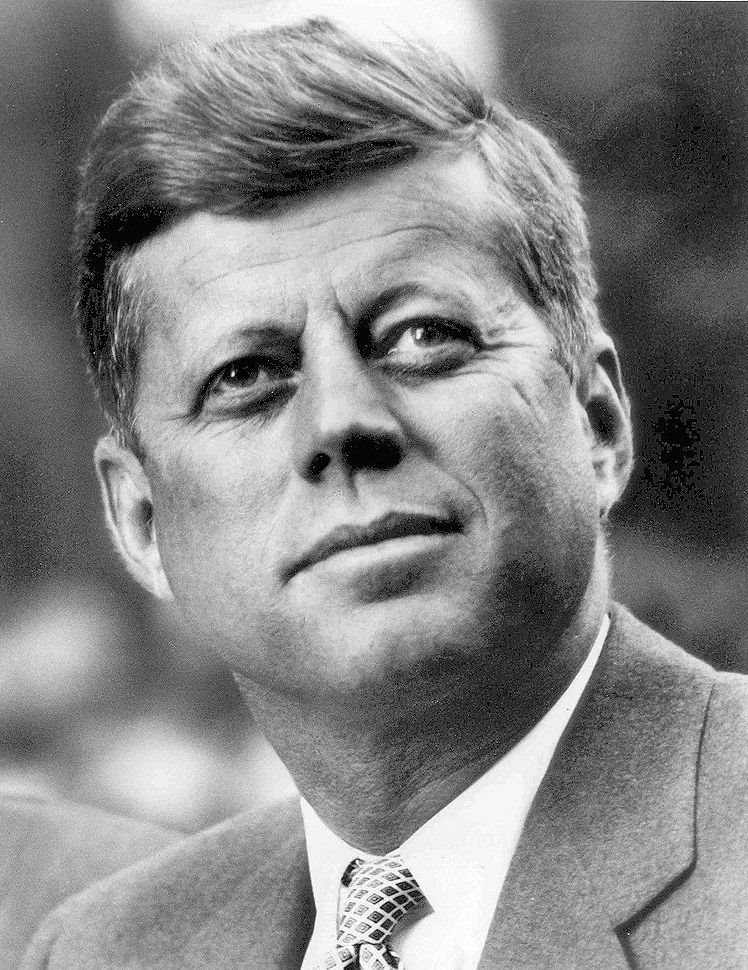

¿Cuántas veces hemos llegado a la Luna?
Muchos creen que desde que Neil Armstrong dejó marcada su famosa huella sobre el regolito lunar, no hemos regresado a nuestro satélite natural. Sin embargo, en total han sido 6 las misiones que han vuelto a la Luna y un total de 12 astronautas también pisaron la superficie lunar tal y como hizo Armstrong en 1969.
1969
1972
Apolo 11
Apolo 15
Apolo 14
Lanzamiento: 31 de enero de 1971
Alunizaje: 5 de febrero de 1971, Cráter Fra Mauro
Retorno a Tierra: 9 de febrero de 1971, Océano Pacífico
Tripulación: Alan B. Shepard Jr.; Stuart A. Roosa; Edgar D. Mitchel
Apolo 15
1971
Apolo 11
El objetivo principal de la misión Apolo 11 fue alcanzar la meta establecida por el presidente John F. Kennedy de realizar un aterrizaje lunar tripulado y regresar a la Tierra. 4 días después de su lanzamiento la Tripulación llegó a su destino logrando una hazaña inedita para la humanidad.
Apolo 12
La Apolo 12, fue la segunda misión tripulada que se posó en la Luna. Fue planeada y ejecutada como una misión de aterrizaje de precisión. Los astronautas alunizaron Lunar a poca distancia de la nave espacial Surveyor III la cual llegó a la Luna en abril de 1967. Los astronautas trajeron de vuelta a la Tierra algunos de los instrumentos de la Surveyor III para examinar los efectos en los materiales de la nave de la exposición a largo plazo al entorno lunar.
La misión Apolo 12 aterrizó el 19 de noviembre de 1969 en un área del Océano de las Tormentas que había sido visitada anteriormente por varias misiones no tripuladas: la Luna 5, la Surveyor 3 y la Ranger 7. La Unión Astrónomica Internacional, internacional, reconociendo este hecho, bautizó la región como Mare Cognitum (Mar Conocido). La mayor parte del descenso fue automático, con el control manual asumido por Conrad durante los últimos cientos de metros del descenso. Se trató de la primera, y hasta la fecha, la única ocasión en la que los humanos han alcanzado una sonda enviada a aterrizar en otro mundo.
Apolo 14
La misión Apolo 14 aterrizó en la región de Fra Mauro, el lugar de aterrizaje previsto de la abortada misión Apolo 13. Los astronautas usaron el Transportador de Equipo Modulado (MET) para trasportar el equipo durante dos EVA´s -Actividades Extra Vehiculares- lunares (las misiones posteriores usarían el Vehículo Lunar Roving). Durante los mismos recolectaron muestras y tomaron fotografías del cono del Cráter. Uno de los momentos más famosos llegó al final de la segunda EVA cuando el comandante del Apolo 14, Alan Shepard, golpeó 2 pelotas de golf en la Luna.

Apolo 15
La Apolo 15 fue la cuárta misión que llevó hombres a la Luna. Esta fue la primera en la que se utilizó el Rover Lunar -LRV- que los astronautas usaron para explorar la geología de la región de Rima Hadley. El LRV permitió a los astronautas de los Apolo 15, 16 y 17 aventurarse más lejos del Módulo Lunar que en misiones anteriores. La superficie total recorrida aumentó de cientos de metros en las a decenas de kilómetros.
Apolo 16
El principal objetivo de la misión fue investigar la superficie lunar en el área de las tierras altas de Descartes, la cuál se consideraba representativa de gran parte de la superficie de la Luna. Fue la quinta misión que llevó hombres a la Luna y también la segunda en la que se empleó el LRV. Los astronautas recolectaron muestras, tomaron fotografías y realizaron varios experimentos entre los que incluyó el uso por primera vez de una cámara / espectrógrafo ultravioleta en la Luna.
Apolo 17
La 17 fue la última de las misiones Apolo. Esta tendría la peculiaridad de alojar a bordo al único geólogo entrenado para caminar sobre la superficie lunar, el piloto del módulo lunar Harrison Schmitt. En comparación con las misiones anteriores, los astronautas del Apolo 17 recorrieron la mayor distancia jamás viajada en la Luna utilizando el Rover Lunar y devolvieron la mayor cantidad de muestras de roca y suelo. Eugene Cernan, comandante de la misión, todavía cuenta con la distinción de ser el último hombre en caminar sobre la Luna, ya que ningún humano ha vuelto a visitarla desde el 14 de diciembre de 1972.
El último hombre en la Luna
En diciembre de 1972, los astronautas del Apolo 17 Eugene Cernan y Harrison Schmitt pasaron unas 75 horas en la Luna en el valle Tauro-Littrow. En su tercera y última excursion a través de la superficie lunar, Schmitt tomó esta fotografía de Cernan flanqueada por una bandera estadounidense y la antena de alta ganancia con forma de paraguas de su rover lunar. El reflejo de Schmitt se puede ver en el casco de Cernan.